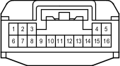

Код детали
G76
Каталожный номер
90980-12423
Цвет
Черный
Технические характеристики
Жгуты проводов для ремонта

Система
A-TRC (для моделей с 1GR-FE, 1KD-FTV)
АБС (для моделей с 1GR-FE, 1KD-FTV)
Система адаптивного переднего освещения
Аудиосистема (для моделей с системой навигации)
Щиток приборов (для моделей с правосторонним рулевым управлением)
Система Crawl (для моделей с 1GR-FE, 1KD-FTV)
Система помощи при спуске по склону (для моделей с 1GR-FE, 1KD-FTV)
Система помощи при подъеме по склону (для моделей с 1GR-FE, 1KD-FTV)
Освещение
Многофункциональный дисплей
Монитор "Multi-Terrain" (для моделей с системой навигации)
Монитор "Multi-Terrain" (для моделей без системы навигации)
Переключатель выбора "Multi-Terrain" (для моделей с 1GR-FE, 1KD-FTV)
Мультиплексная система передачи данных (CAN, для моделей с правосторонним рулевым управлением)
Система навигации
Система помощи при парковке (монитор помощи при парковке / монитор заднего вида и монитор переднего и бокового вида с широкими углами обзора) (для моделей с системой навигации)
Система помощи при парковке (монитор заднего вида и монитор переднего и бокового вида с широкими углами обзора) (для моделей без системы навигации)
Система помощи при парковке (сенсорная система помощи при парковке TOYOTA) (с 8 датчиками, для моделей с системой навигации)
Система помощи при парковке (сенсорная система помощи при парковке TOYOTA) (с 8 датчиками, для моделей без системы навигации и с многофункциональным дисплеем)
Система помощи при парковке (сенсорная система помощи при парковке TOYOTA) (с 8 датчиками, для моделей без системы навигации и многофункционального дисплея)
Задние фонари
VSC (для моделей с 1GR-FE, 1KD-FTV)